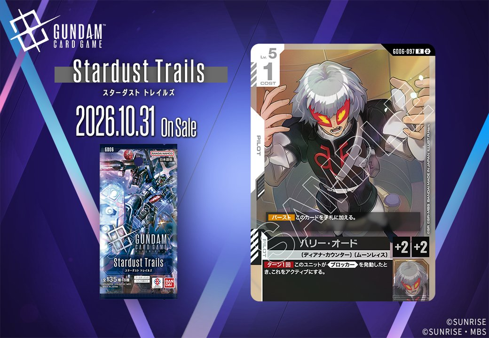
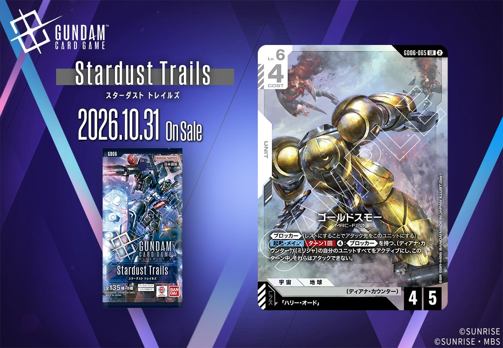
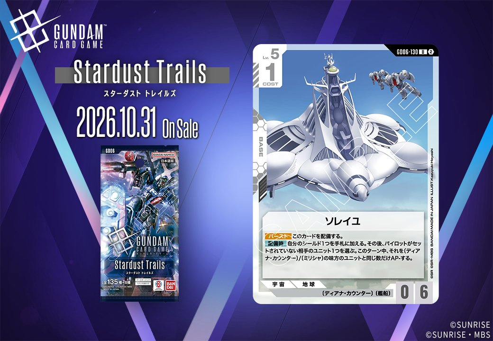
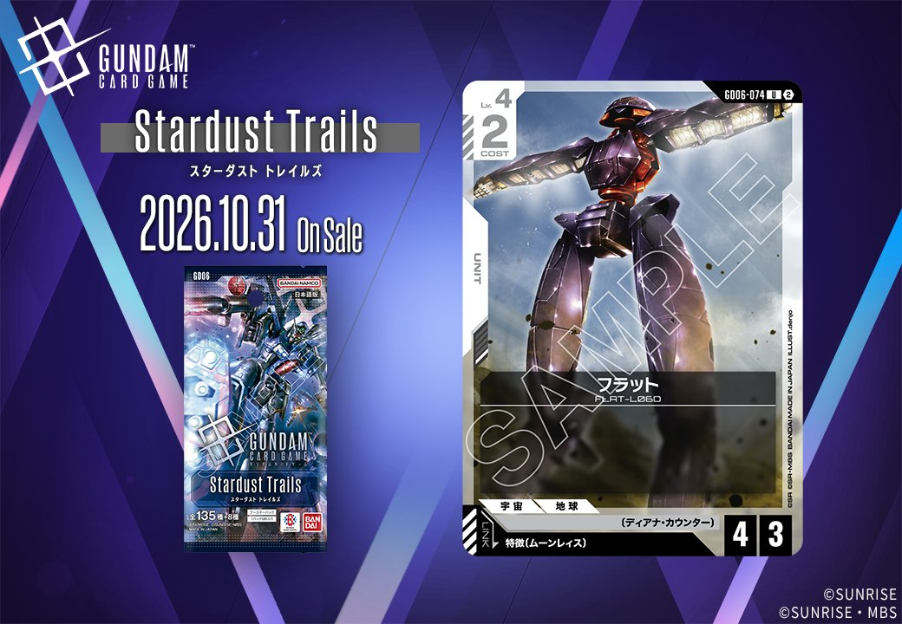
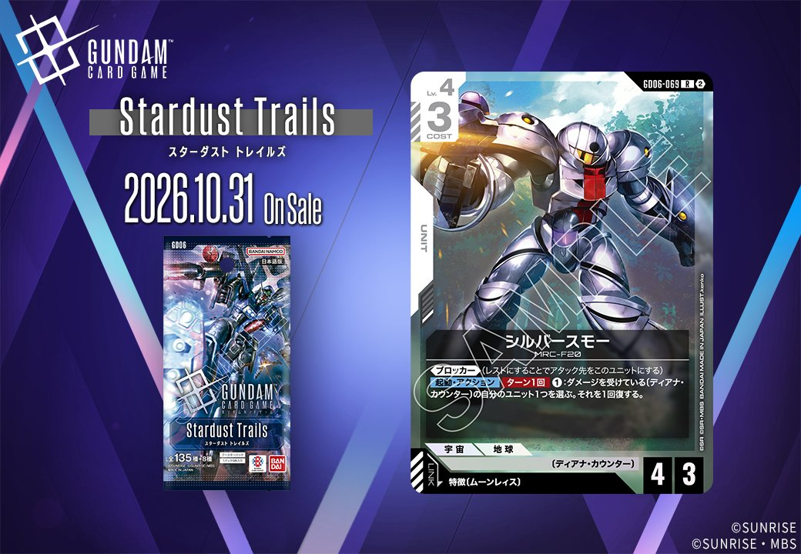
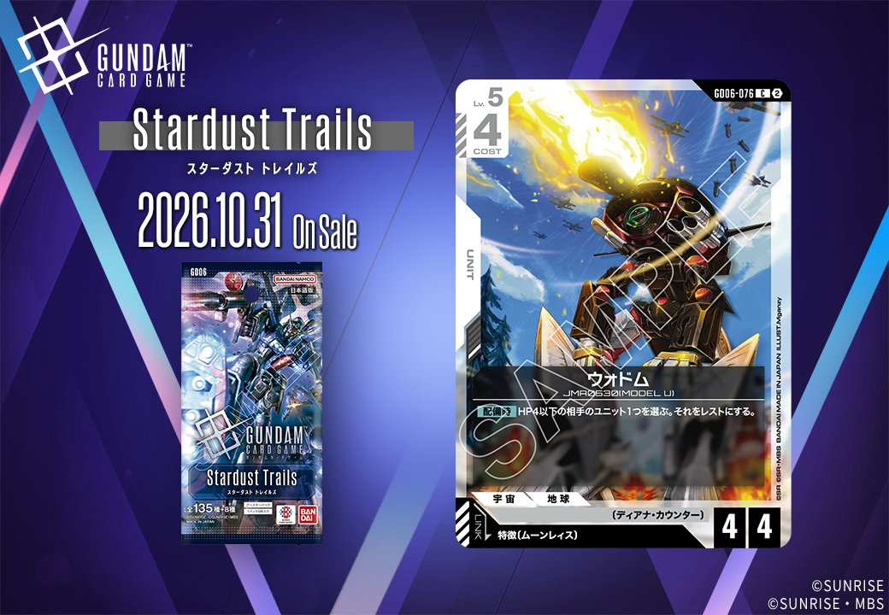
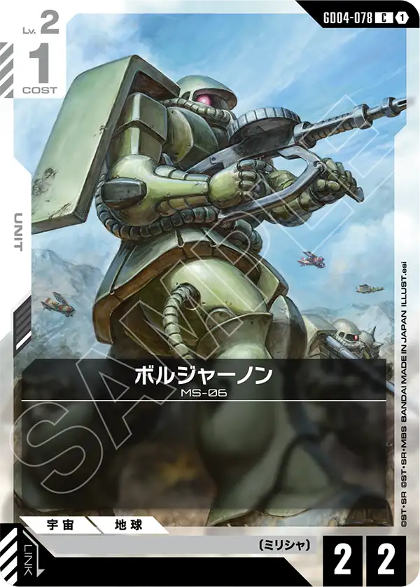
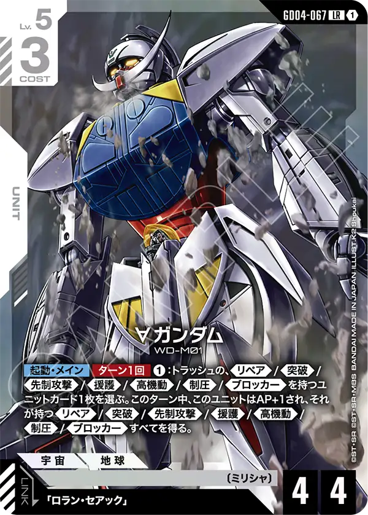

2026年10月31日発売の新カードから、白のUNIT「ゴールドスモー」（GD06-065）と白のPILOT「ハリー・オード」（GD06-097）の2枚を紹介します。拡張の表記はハリー・オードがGD06、ゴールドスモーがStardust Trailsですが、カード番号はどちらもGD06で始まっています。ゴールドスモーは「ハリー・オード」をリンク条件に指定するUNITで、同日公開のPILOT「ハリー・オード」と組み合わせるとリンクが成立します。リンク相手はカード名で1枚に限定されているものの、その相手が同じ白のカードとして同じ発売日に登場するので、2枚をそろえればリンク条件を満たせます。

ハリー・オード (GD06-097)
| 色 | 白 | タイプ | PILOT |
| Lv | 5 | コスト | 1 |
| 補正 AP | 2 | 補正 HP | 2 |
| 特徴 | 〔ディアナ・カウンター〕、〔ムーンレィス〕 | ||
効果: 【バースト】このカードを手札に加える。【ターン1回】このユニットが《ブロッカー》を発動したとき、これをアクティブにする。
ハリー・オードは白のパイロットで、Lv.5、コスト1、AP2/HP2です。【バースト】で手札に加わるため、シールドから出ても無駄になりません。主な効果は【ターン1回】、このユニットが《ブロッカー》を発動したときにアクティブへ戻すもので、同じ相手ターン中に再びブロックへ備えられます。リンク先のゴールドスモーは自身が《ブロッカー》を持つので、この効果を確実に活かせる組合せになります。ゴールドスモーの【起動・メイン】は自分のターンに使う別の効果で、ハリーの効果とは独立して働きます。《ブロッカー》を持たないユニットに乗せた場合は効果が発動しない点に注意が必要でしょう。

ゴールドスモー (GD06-065)
| 色 | 白 | タイプ | UNIT |
| Lv | 6 | コスト | 4 |
| AP | 4 | HP | 5 |
| 特徴 | 〔ミリシャ〕、〔ディアナ・カウンター〕 | ||
| リンク条件 | 「ハリー・オード」 | ||
効果: 《ブロッカー》(レストにすることでアタック先をこのユニットにする)【起動・メイン】ターン1回、4:《ブロッカー》を持つ、〔ディアナ・カウンター〕〔ミリシャ〕の自分のユニットすべてをアクティブにし、このターン中、それらはアタックできない。
ゴールドスモーはLv.6、コスト4、AP4/HP5の《ブロッカー》持ちのユニットです。【起動・メイン】はターン1回、4を支払うと《ブロッカー》を持つ〔ディアナ・カウンター〕〔ミリシャ〕の自分のユニットすべてをアクティブにします。そのターン中はそれらでアタックできませんが、先にアタックしてレストになったユニットを相手ターンのブロック要員として立て直せます。自身や、同じ条件を満たすシルバースモーも対象です。リンク先の「ハリー・オード」は、《ブロッカー》を発動したときにターン1回このユニットをアクティブにするため、相手ターン中にもう一度ブロックに回れます。攻撃と守りを両立させたい構築に合う1枚でしょう。
関連カード
-
ロラン・セアック(GD04-097)白系デッキ内採用率0.5% (40デッキ)
-

ソレイユ(GD06-130)NEW白系 — 同色・共通特徴: ディアナ・カウンター（新カード） -

フラット(GD06-074)NEW白系 — 同色・共通特徴: ディアナ・カウンター（新カード） -

シルバースモー(GD06-069)NEW白系 — 同色・共通特徴: ディアナ・カウンター（新カード） -

ウォドム(GD06-076)NEW白系 — 同色・共通特徴: ディアナ・カウンター（新カード） -
 フラット（ミリシャ仕様）(GD04-077)白系デッキ内採用率12.6% (999デッキ)
フラット（ミリシャ仕様）(GD04-077)白系デッキ内採用率12.6% (999デッキ) -
カプル(GD04-074)白系デッキ内採用率0.5% (41デッキ)
-

ボルジャーノン(GD04-078)白系デッキ内採用率0.4% (32デッキ) -

∀ガンダム(GD04-067)白系デッキ内採用率0.3% (27デッキ) -
ハリー・オード(GD06-097)NEW白系 — リンク先（新カード）